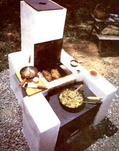
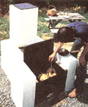
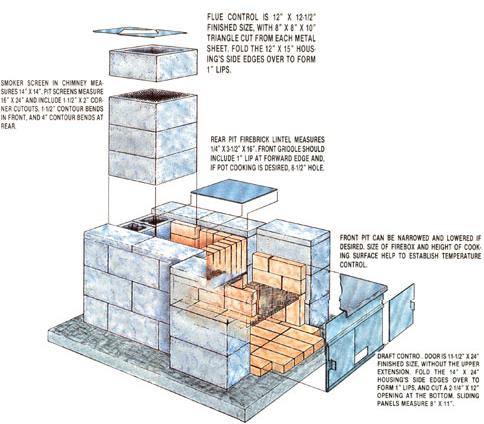
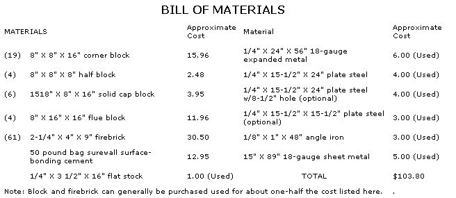

The cookout season is hard upon us, so why not build . . .
STAFF PHOTOS
Summer's the time to enjoy good food, warm weather, and the company of friends . . . and there's no better opportunity to bring these things together than at a genuine oldfashioned cookout!
This year, you can make your backyard the envy of every charcoal chef in the neighborhood. How? By building a permanent outdoor barbecue that'll not only equal the performance of the best manufactured grills, but probably cost the same (or less, depending upon how many components you can locate used), last longer, and allow you to try out some fancy cooking techniques in the bargain.
As you might imagine, our goals were to come up with a design that was flexible and multifunctional . . . to employ a construction method that even a novice could duplicate . . . to make certain it was cost-effective . . . and to end up with a good-looking, fine-cooking finished product.
Though it's probably not that obvious from the photos, MOTHER's barbecue grill is constructed of dry-stacked concrete block coated with a structural surface-bonding cement and lined, in the firebox, with common refractory brick. Expanded metal screens, set at appropriate levels in the stacked firebrick joints, serve as inexpensive grilling surfaces; sections of scrap 1/4" metal plate fitted above the screens create a closed oven environment and can be lowered without much fuss to become effective griddles.
But that's not all. Since draft control is critical to heat regulation, we've included a stonesimple, and removable, loading and airinlet door at the front, and-for use with cooler fires-a similar flue control on the chimney above a built-in smoker rack. Then, its a final touch, we fabricated an additional cover plate with an 8-1/2" hole in the center to be used in conjunction with a wok or a castiron stock pot.
In the case of this barbecue, a picture really is worth a thousand words, so we're going to present our basic design by means of an illustration and two photos. But we're not about to set you on your own just yet: A few hints and tips passed in your direction should help to start you on a project that'll be just as much fun to build as it will be to use. And keep in mind that there's plenty of room for modifications, in the event that you want to make some layout changes.
To begin, you'll want to select a level site in a somewhat open area. If you don't have a flat place available, you'll have to make one by digging a slab footing, grading it with a hoe and square-nosed trenching spade, and checking it with a level. Take some care with this, because it will influence the integrity of your finished grill.
If frost heaving might be a problem (it probably will be in most areas of the country), dig the footing several inches deep and lay sand or gravel in the pit. After the surface is smoothed, the blocks and firebrick can be set safely on top.
We chose to join the blocks with a surface bond because that technique will make a successful mason of anyone; Surewall surface bonding cement (manufactured by the W.R. Bonsal Company, P.O. Box 38, Lilesvillc, NC 28091) is easy to apply with a hawk and trowel, is water-resistant, and can withstand bending and shear stresses remarkable well because it contains shredded fiberglass strands. The recommended 1/8"-thick coat has a white, fairly rough texture, so you may want to add a tinted finish coat later. Be sure to fill the concrete block cores with sand before you cap them, as this will provide weight and an evenly distributed heat sink to stave of stress and thermal cracking.
The firebrick is merely stacked without mortar to allow for expansion. Likewise, the metal plates should be cut to fit loosely in their places for the same reason. Don't, by the way, waste your money buying new steel; scrap prices are much more attractive, and even though the metal's not especially goodlooking when you buy it, it can be cleaned up with a wire brush or a sanding cloth. You may even be able to find a plate of the right size or get the scrap dealer to trim a section for you. (A contoured lip or a section of angle iron welded to the front plate will prevent the door from falling forward, so keep that in mind while you scrounge.)
Finally, don't be afraid to tackle the fabrication of the sheet metal door (or the flue control, if you want one) yourself. "Quick and dirty" is the byword here, and a hammer and a pair of aviation snips will go a long way toward seeing this tin-knocking job to completion. The 8" X 24" extension above the sliding-door panel can be either riveted, welded, or-if you smooth down the heads-bolted in place.
That's it in a nutshell. Look over what we've done, and feel free to make any changes that might suit your needs or particular style of cooking. But most of all, enjoy the warm evenings to come.
|
 |
 |
 |
|
 |
|
|